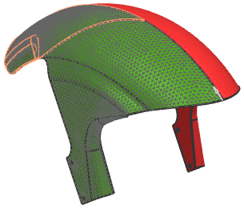
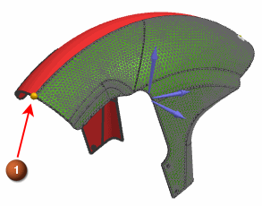
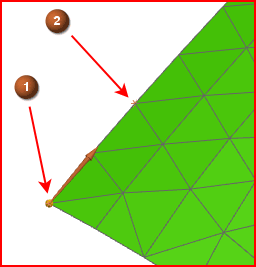

修改皱褶数据
通过复制现有层片并修改它们的皱褶数据来创建新的层片。
-
 仿真导航器
仿真导航器 -
 Mud_guard
Mud_guard -
 编辑
编辑 -
1 (全局铺层 id)
-
Shift
+
2 (全局铺层 id) -
复制
-
粘贴
-
3 (全局铺层 id)
-
Shift
+
4 (全局铺层 id) -
定义皱褶输入
-
是
(替代现有皱褶输入?)
-
求解器
织物

-
锁定角度
20
-
选择如下所示的5个已划分网格曲面

-
起点
-


注释
使用快速拾取来选择现有点-节点。
-
两点(主要对齐
 自动判断的矢量列表)
自动判断的矢量列表) -
仿真导航器
-
 多边形几何体(取消选中)
多边形几何体(取消选中) -


注释
对于第一个网格节点，使用快速拾取来选择现有点—节点。
如果矢量指向其它方向，点击反向
 。
。 -
确定
所有对话框
-
仿真导航器
-
 多边形几何体(选中)
多边形几何体(选中)